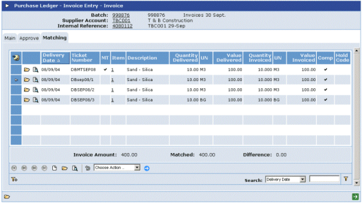

The Invoice Matching tab allows you to identify which items on the order are covered by the invoice.

If the order required GRNs:
The list shows all unmatched GRNs for the order.
If a GRN line has been fully invoiced,
The Delivered columns show the quantity and value delivered according to the GRN(s).
The Invoiced columns are for you to enter the amounts for which you have been invoiced.
The Invoice Amount is the actual total amount of the invoice.
The Matched amount is the total of the values in the Invoiced column.
If the order did not require GRNs:
The list shows any outstanding order details.
If an order line has been fully invoiced,
The Outstanding columns show the outstanding quantity and value on the order.
The Invoiced columns are for you to enter the amounts for which you have been invoiced.
The Invoice Amount is the actual total amount of the invoice.
The Matched amount is the total of the values in the Invoiced column.
You can add lines for additional charges.